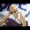
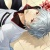
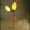

Opera's lightweight themes
Introduction
Opera 12 brings us many improvements, including updates to the Opera skinning system. For a start, the updates are so extensive that we have renamed skins to themes. There is a new lightweight system that sits on top of the default Opera theme and makes simple customizations much easier to achieve. In this article we'll take a look at how this lightweight system works.
How does it work?
These new lightweight themes work in the same way as the existing themes system: they are packaged in a ZIP file, and contain two things, assets that you want to use in your theme, and a persona.ini file. The .ini file is how Opera recognises the ZIP file as a theme — when it encounters such a file (eg by following a link to it), it will automatically install the theme: a nice simple process. The theme applies is applied on top of the default Opera skin for your OS.
The persona.ini file contains a number of sections, each begun by a heading contained in square brackets, like so: [Options]. Each of these sections contains information to specify different parts of the theme, such as a custom background image, etc. the key here is simplicity — you can still use the old heavyweight theme system to create a full customization if you want, but a lot of people just want to do something simple, and don't want to risk breaking the UI. The lightweight system is much easier to use. In Opera 12 we are only allowing you to customize the background image, colorization, and which major parts of the UI the image shows through. More options may be added in the future.
In the next section we will run through a complete theme example to show how this all works.
Walking through an example
To try out an example theme, install Opera 12 and point it at our Opera themes page. Try clicking on one of the examples and you'll notice that your browser changes its style to look something like the following:

Figure 1: An example theme in action.
You will find this theme listed along with any other themes you may have installed, in Tools > Appearance. From these you can choose to select between the different ones you've previously installed, or delete them. You can also make a theme available from the appearance dialog by placing it in the skin directory of your Opera profile. You can find this in [home folder]/Library/Opera on Mac and Linux, and C:\users\[user]\AppData\Roaming\Opera\Opera on Windows.
I have made an Opera theme available for you to play with. If you save the ZIP file to your machine, then unzip it, you'll find assets, plus the personas.ini file, which contains the following sections:
# This file describes a test persona for the Opera browser. Not meant for redistribution.This is a comment, to give some background information about the theme. You can put comments anywhere you like in the file, as long as they are written on a separate line and started with a hash/pound symbol (#).
[Info]
Name = The Natural History of Norway
Author = Opera Software
Version = 1
Preview Image =The [Info] section is quite self explanatory. The Name is the name of the theme, as it will appear in the Appearance dialog, on the upcoming Opera themes catalog, etc. The Author is the author of the theme, and Version should always be set as 1 (this means "version 1 of the lightweight theme system"). Preview Image is supposed to provide a preview for catalogs, etc., but is not currently being used.
[Options]
Tint Color = #3e6da9An optional section: if specified, Tint Color overrides the current colorization with a specific color tint — we colorize with the average colour of the image. Some of the themes, when installed, will add a colouration/tint over the top of the theme.
Tint Color has an alias, Colorize Color, which you can use instead, but I think you'll agree that Tint Color is a bit more intuitive.
[Window Image]
Type = BestFit
Background = Kraken.jpg
Colorize = 0The [Window Image] section controls settings of the whole browser window. The Type is set to BestFit to indicate that Opera will fit a single copy of the image in the best way it can. The other available setting is BoxTile, which tiles the image. The Background line specifies the path to the image that will be used as a custom background image for the theme. Colorize = 0 specifies that you don't want the custom image colorized in the same way as the rest of the UI. Set it to 1 if you do.
Note: The overall size of the theme should not exceed 1MB, therefore you should be careful with the size of your background image, and try to optimize it down using an application such as ImageOptim.
[Clear elements]
Speed Dial Widget Blank Skin = 1
Speed Dial Widget Skin = 1Setting these properties all to 1 will cause the background image to shine through the speed dial. If they are missing or set to 0, it won't.
You can't do much else inside lightweight themes, although we may add more options later. This sounds limiting, you might say, but this is deliberate — themes are for applying small changes. If you want to make more extensive changes, you'll still use the full theming system. But this new way is a lot simpler to write and apply.
Installing and sharing a theme
When you've created a theme, you'll want to share it with others so they can see your handiwork. The best way to do this is to upload it to our Themes repository — to do this, use our Opera addons developer upload page. You'll need a my.opera user account to do so. Sharing your theme like this means that it will be easily findable by others, and our team will also check it thoroughly for errors before making it public.
Note that if you instead upload it to your own web server, you'll need to make sure you serve it with the correct mime type, otherwise it won't install. To do this, put the following inside an .htaccess file in the same directory (for an Apache-based server, of course — other server types will require a different but equivalent fix):
<files *.zip>
ForceType application/x-opera-configuration-skin
</files>Summary
I hope you found our walkthrough of Opera lightweight themes helpful. Let us know what you think!
Chris Mills

Chris Mills is a web technologist, open standards evangelist and education agitator, currently working at Opera Software in the developer relations team. He spends most of his time writing articles about web standards for dev.opera.com and other publications (such as .net mag and A List Apart), giving talks at universities and industry conferences, and lobbying universities to improve their web education courses. He believes that education is the answer to everything, but in particular he is passionate about using education to improve the overall content quality, accessibility, usability and future-viability of the Web.
He is the creator of the Opera Web standards curriculum, contributor to the WaSP InterACT project, and coauthor of InterACT with web standards: A Holistic Approach to Web Design. In August 2011, he also accepted the position of co-chair of the newly-formed Web Education Community Group.
Outside work he is a heavy metal drummer, proud father of three and lover of good beer.
This article is licensed under a Creative Commons Attribution 3.0 Unported license.
Comments
The forum archive of this article is still available on My Opera.
-

When will we be able to upload our themes?
-

I was looking forward for this feature!
-
so amazing
-
please give us a possibility to upload and more themes...
-

NONE of TOOLBARS are covered with personas
-

pls support other toolbars skining like firefox, they are important as as tab bar
-

It would be nice if the original themes where integrated into this new system. It seems senseless to separate them completely.
-

@Jim the eventual idea is that you will be able to apply a customized skin, and then put a theme over the top of that, to provide a little more tweaking and customization. For those of us who just want to add a different background image, and don't want to wade through the skinning process, themes make things easier. I think it adds an extra level of flexibility. Does this help you with the idea?
-

@Chris
-

sir koi v aps install nhi ho rha ka karo plz helpppppppp meeeeeeeeee
-

its amazing but i guess the last one was a little bit better
-

I am afraid this will further kill skinning. Back in the day it was way simpler to edit a skin. Skins were unique. Call me a fossil or compare recent skins with those published 4-5 yrs ago.
-

@cethoss the classic opera skinning system is not going to be killed - skins and themes will work side by side. The idea is that eventually you will install a skin, and then you can put a theme over the top of that, to further customise the skin, adding a custom graphic or tint. I'm sorry this was not made clearer, and hope that clarifies things somewhat.
-

You can now upload your themes to our theme repository using the addons upload form at https://addons.opera.com/en/developer/upload/
-
Is it currently possible for a theme to adopt the color scheme that the skin has been tinted with? It would be nice for skins and themes to be found under separate tabs (and folders). Presently, a custom skin and a theme can both be loaded but it requires either editing operaperfs.ini or selecting a skin with OK and then highlight a theme and then closing the appearance dialog with the X button. Is an easier method coming?
-

I'm seeing an issue with how text is displayed with the new themes...
-

@Richard E. Botbyl, pumpki — thank you for the feedback. I think it makes sense, and I will pass your ideas on to the theme developers.
-
Chris, how can i upload the themes online.. what file format should i convert them to?
-

@Enoch Hi! The themes should be packages using a standard ZIP file.
-
What should be the extension?
-
2developers: What is the minimal size of image should be for this type of theme? I tried image from this post ( http://devfiles.myopera.com/articles/6362/theme1.jpg ) - 620x406 and Opera crashed with it :(
-
Hi, I need info on how to make a skin exactly like this: https://addons.opera.com/en/themes/details/opera-stratiform-mod/
-

I like the new theme possibility, because it won't break with an update.
-

@Unrealmirakulix sorry for the delay on this. I have asked the relevant developer team to see how far away this currently is.
-

is it possible to apply that background image effect on tab bar in a skin?
-
how to change button layout of the main window, they are located on the right side, I want to arrange them on the left side like a Mac style, How it can be done? I'm, using linux, and the main gtk theme button allocated on the left side.
-

Its giving same error again and again
-
how about allowing transparency in every page browser? this will really make customization really good if my background is little bit shown in the background of the web pages....
-
Can u please tell u guys how to create a transperent theme with out the image in the background
-
excelente la publicacion y el contenido...muy facil de crear temas...pero nesecito saber como cambiar el fondo de "descargas" (downloads)?????
-

Hey! Great article. I have a question that needs a I really need someone to answer. I played with the files you provided and made my own background and all, but now that I've tried to upload, it said I haven't provided any background image. I tried to add the background attribute, but still I get the error message! Thanks in advance.
-
Still no preview image?
-
Türkçe neden yok kanka ?
-

Why not let the skin set the background for extensions page too: CTRl SHFT E
-
Türkçe olmazsa operanın herşeyi eksik olacaktır. Türkçe olsun kullanıcı sayısını 2 milyar yapalım. Mutlu günler
-
Te ngarti bahasa inggris ey,,,
-

A tag system for themes finding could be really useful 'n valued.
-

"SkyDrive" logged into your Facebook account (امروز ساعت 15:57). If this wasn't authorized, check your email for instructions.
-

http://maps.sonyericsson.com/?q=36.481186,52.351248
-

در حاليكه مقابل مانيتورتان نشستيد يا هر جاي ديگه مانند صندلي روي مبل, پاي راستتان را كمي بالا بياوريد و در جهت عقربه هاي ساعت بچرخانيد در همين حال با دست راست شماره 6 را در هوا بنويسيد, خوب مسير چرخش پاي شما تغيير كرد نه!!؟ يعني پاي شما خلاف عقربه هاي ساعت شروع به چرخيدن كرد درسته؟هنوز دانشمندان براي اين عكس العمل مغز جوابي پيدا نكردند.موتور جستجوي سيويل
-

مسابقه شعرپیامکیجوایز:10گوشی سونی Xperiaشرکت درقرعه کشی حتی باپاسخ به یک سوال!امتیاز بیشتر=شانس بیشتر*برای عضویت رایگانOZV MSHERرابه8282پیامک کنید.هرسوال75 تومانحامی:سروش همراه
-

ممتاز و اخاف ان افقدها من الكمبيوتر خاصتي اجسن ما هو موجود في النت
-

Windows Networking Diagnostics unabled?
-

OK,
-

Русские здесь есть? ))
-
Походу, нет XD
-
Where is there an app or tutorial about how to create skins ....... the old way. I don't mean the current themes where you change a background picture. How to build a skin where you can use icon or images to change the back button and other buttons, layout and such.
-

看不懂，有中文版主题制作教程吗？英文很差。
-

hhhhhh
-
Since 12.10, Opera has ignored my settings for [Speed Dial Widget Blank Skin]. I usually clone [Speed Dial Widget Blank Skin] to [Speed Dial Widget Skin] to avoid having a glaring white screen. Is there any way to add a background to a blank page or is this a new feature?
-
I just wanna quick guide to learn how to create themes so I can upload/share them with the Opera community. Please O-mail (Opera mail) me the relevant info so I can get started a.s.a.p. Thanks.
No new comments accepted.Jorge Campos
Sunday, December 11, 2011
Enio San
Sunday, December 18, 2011
Looking forward to be part of the Opera Theme designer community!
komang acong
Thursday, December 22, 2011
Unrealmirakulix
Saturday, December 31, 2011
idice
Friday, January 20, 2012
i nearly feel no change when surfing with the new browser especially when surfing with maximized window
idice
Friday, January 27, 2012
Jim
Friday, February 17, 2012
There are many very creative themes people made already, and I know a few people who use Opera just because it is so flexible in that way.
Chris Mills
Monday, February 20, 2012
Please feel free to share your thoughts in more detail - it is always useful to get this kind of feedback.
Jim
Tuesday, March 6, 2012
Yes I think I understand. You want to give the option to have a personal image in the background even when using a custom skin.
Do you know what the Radius option does. I notice it is used in one of the themes.
manish1211
Friday, March 16, 2012
cold deep ocean
Thursday, April 26, 2012
cethoss
Friday, April 27, 2012
It's like car models aerodynamics made them all look alike. Thanks to windows 7 and its transparency thing, which I never liked, this was the only direction to take I guess. I hope a handful designs that I like keep working with the new versions.
Chris Mills
Friday, April 27, 2012
Chris Mills
Tuesday, May 1, 2012
Richard E. Botbyl
Thursday, May 10, 2012
pumpki
Friday, May 11, 2012
Let's say you use a really dark photo for the background of the theme then you look at the page title. Its completely unreadable. This is the same with tabs.
Shouldn't there be a text colour associated with the theme itself?
Rather than using a skin which changes the text colour then applying a theme over that which could have the same problems. (apply dark skin with white text then add a bright coloured theme.)
Chris Mills
Friday, May 11, 2012
Enoch 'Robot Boy' Appiah Junior
Thursday, May 17, 2012
Chris Mills
Thursday, May 17, 2012
Enoch 'Robot Boy' Appiah Junior
Sunday, May 20, 2012
Maxim
Wednesday, May 30, 2012
thank you.
иsᴀɴᴇ
Monday, June 4, 2012
Features: Back button with a trash icon, Fix for the maximized Windows icons (minimize, restore, close), etc., and titles are removed for speed dial.
How can I make all these fixes? Now I also want to add a little transparency to the toolbar... how can I make that, also?
JanGen
Monday, June 11, 2012
But what I don't understand: Why not make is a configurable preference?
It's just a image file with four settings. Why isn't there a preference for theming, a possibility to drag and drop a image file and play with the colour settings, that's much easier then wrapping it all up in a zip file.
I wasn't aware of the appearance menu option for a long time because I was using a different skin. :)
Why isn't there any setting for appearance/skin in the preference section. A user should be able to skin/theme everything except the preference dialogues, which should offer access to any setting IMHO, also theming/skinning
Chris Mills
Thursday, June 14, 2012
Best regards...
Tiago Wakabayashi
Friday, June 15, 2012
yurikovals
Sunday, June 17, 2012
androidify
Wednesday, June 27, 2012
"No background image found in the path provided by the persona.ini file. Please fix it and try again."
jproz
Sunday, July 8, 2012
Dharma
Sunday, July 8, 2012
Jeser Enaí Silva Pereira
Wednesday, August 8, 2012
Viktor Wahlberg
Sunday, August 12, 2012
Unrealmirakulix
Thursday, August 16, 2012
Cause my theme is made for 16:10 or 16:9, the 4:3 preview is useless.
Can anyone help?
Oğuzhan Ataç
Wednesday, August 29, 2012
Janghou
Friday, November 9, 2012
That page is so boring now...
Dursun Top
Saturday, November 17, 2012
virrdaexcellents313
Wednesday, December 5, 2012
Alessandro Cassarà
Saturday, December 15, 2012
Mohamadreza Rezaei
Monday, December 31, 2012
Mohamadreza Rezaei
Monday, December 31, 2012
Mohamadreza Rezaei
Monday, December 31, 2012
Mohamadreza Rezaei
Monday, December 31, 2012
kayn chi
Thursday, January 3, 2013
Mohamadreza Rezaei
Thursday, January 17, 2013
konic
Thursday, January 24, 2013
I tried several "themes" and all of them look really like a "skins".
I mean, what previously was called "skin" in fact was a theme
because it contained elements to change almost everything.
But now the "themes" I tried change only SpeedDial and menu backgrounds.
And color for panels.
That's it!?
So I would call them - skins.
Андрей
Thursday, January 24, 2013
Евгения
Friday, January 25, 2013
Rich Manson
Monday, January 28, 2013
Konic: I think you have it backwards. You should really look up the def of the words skin and theme. Thems are a lot like 'Styles' in windows where you can change background pictures of the desktop and font size and color and maybe border widths. Skins are overlays which in essence completely cover an application and change the whole look and you can change the buttons, layout, feel and everything.
wangtengfei126
Tuesday, February 5, 2013
hoa thien hai
Wednesday, February 13, 2013
Richard E. Botbyl
Wednesday, February 13, 2013
Couple this with the fact that when Speed Dial is hidden, there no longer is a "show speed dial" button on a blank page. I can get it to show using a Speed Dial button but this adds an unnecessary click.
Ahmad Dan-Hamidu
Saturday, December 14, 2013